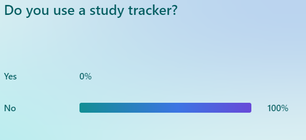
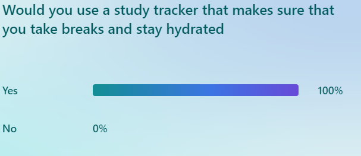
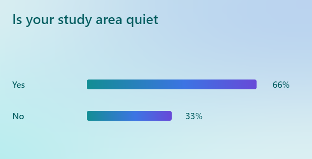
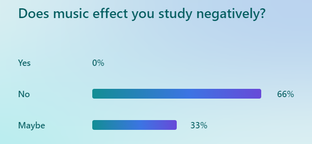

Investigation & Plan
After getting the brief I studied it carefully and came up with 3 topic's
1. Sleep
2. Studying Planning
3. Running Tracker
Ultimately I decied on Study tracking and how it effects wellbeing, I decided to go with it over sleep and running as form my research on sleep I could not see a way to fully complete the project. And the same could be said for the running tracker.
I looked at what i could track to track study, Initally I researched heart rate to detect stress levels but due to limitations with the mirobit i decided against it. I then reaseched how hydration effects study. And the importance of breaks.
I chose study as I have trouble when it comes to anexity when study which effects not only my results but my wellbeing also.
Through my research i discoved there is not many if any products that preform the same duty of my artefacts. the closest product was an chrome extension called "Marinara" which tracks study and times breaks. The timing aspect is very similar to one of my goals for the artifact. REF 2
I then researched sound levels how that effects study. i learned form ref3 how even slight increases in sound levels can effect study and the retention of information. I also learnt form ref4 that the opitum sound level for learing is around 35 db. This is around the level of whispers
I also researched the effect of music on study. Aswell as the effect of hydration
Using my research on hyrdration i learned that students who stay hyrdrated while studying and during the exam overall have higher grades when it comes to there exams
It also suggests that drinking water can help relive anexity
This research lead me to look into software that tracks water consumoption and a i found many apps, WaterMinder was one, one issue i found with all of these apps was the lack of automation and the need for the user to tell the application when they drink water.
i then did a questionare to try and gather data from the end user and the results are as follows.

In this image all of the end user dont use a study tracker to keep track of how they study

the responeses also showed that all responeses would use it.

33% of responeses said that there study area was not quite enough
All respones stated they listened to music when there where studying

But most respones said it did not effect them.